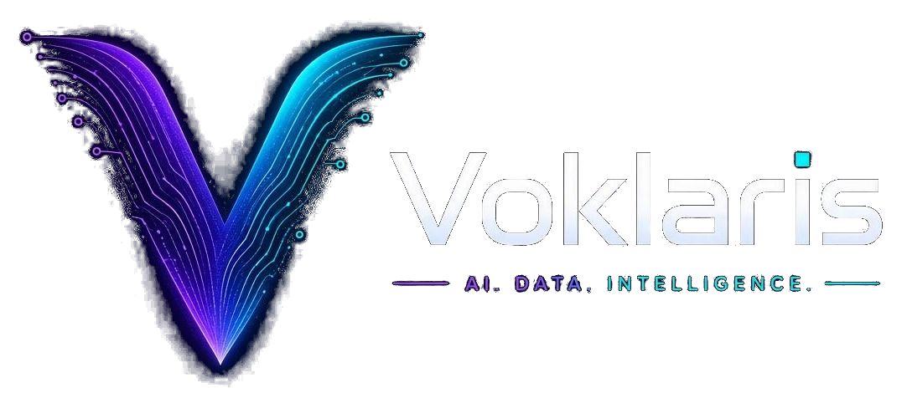
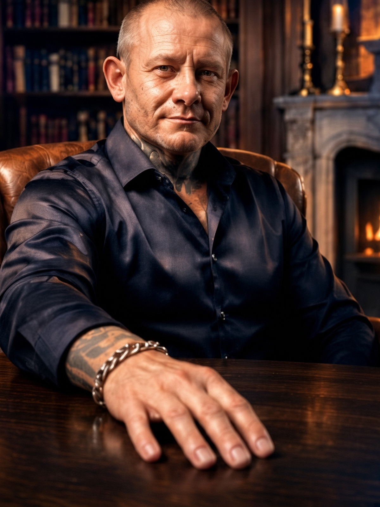

01Systemy
EasyPeasy OS
Ekosystem AI · aplikacje · agenci
Osobisty system operacyjny do pracy z modelami. Aplikacje, agenci i automatyzacje spięte tak, żeby dało się nimi zarządzać jak jednym produktem.
Portfolio · Köln · 2026

Studio Wojciecha Dwojaka. Modele językowe zamieniam w produkty, których da się używać: czat, agentów, logistykę, pisma urzędowe.

O mnie
VoklarisAI · Data · Intelligence
„Najpierw sens. Potem system. Na końcu ekran, który nie przeszkadza.”
Pracuję na styku danych, interfejsu i automatyzacji. Nie kolekcjonuję prototypów. Biorę rzecz, która ma być używana w zwykły tydzień, i doprowadzam ją do formy, którą da się pokazać, utrzymać i rozwinąć. Baza jest w Kolonii, praca — tam, gdzie jest produkt.
Wybrane projekty
Najedź kartę albo skup ją z klawiatury — spod spodu wyjedzie krótki opis. Na telefonie opis jest od razu.
6 prac
Ekosystem AI · aplikacje · agenci
Osobisty system operacyjny do pracy z modelami. Aplikacje, agenci i automatyzacje spięte tak, żeby dało się nimi zarządzać jak jednym produktem.
Wszystkie modele w jednym miejscu
Wielomodelowy czat: jedna rozmowa, wiele silników. Bez przeskakiwania między kartami, kontami i obcymi limitami interfejsu.
Centrum sterowania · automatyzacje
Pulpit, z którego widać agentów i automatyzacje naraz. Zamiast rozproszonych skryptów — jedno miejsce decyzji.
Android · Kotlin · Jetpack Compose
Natywna aplikacja na Androida. Rozmowa z modelem w kieszeni, składana w Compose, bez opakowania w webview.
Amtsdeutsch · pisma po polsku
Tłumaczy niemiecki język urzędowy na polski, którym da się odpowiedzieć. Pismo przestaje być ścianą i staje się zadaniem.
Trasy · planowanie · farmacja
Planowanie i optymalizacja tras w logistyce farmaceutycznej. Mniej pustych kilometrów, więcej dostaw, które są na czas.
Umiejętności
Robię to sam, w jednym warsztacie. Bez podziału na „ktoś od slajdów” i „ktoś od kodu”.
Usługi
01
Aplikacja albo narzędzie od pierwszej decyzji do wersji, którą da się oddać.
02
Agenci, automatyzacje i pulpit, z którego widać, co właściwie pracuje.
03
Identyfikacja i interfejs trzymane jedną myślą — nie doklejone na końcu.
Kontakt
Produkt między pomysłem a narzędziem, pismo, którego nie da się ruszyć, trasa, która się sypie. Kilka zdań wystarczy na start.
Köln · współpraca zdalna